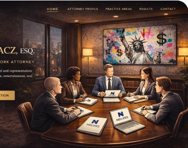

Complex Commercial Litigation
Lead counsel in high stakes business disputes across federal and state courts, arbitration, and mediation, all executed with precision, speed, and relentless advocacy when required.
Neil L. Postrygacz provides solution driven counsel in complex commercial litigation and high stakes business matters, including disputes involving emerging technology. He resolves what can be resolved efficiently and fights relentlessly when it cannot.

Neil L. Postrygacz represents businesses, executives, and investors in complex commercial litigation and consequential disputes. He operates with a clear mandate: resolve what can be resolved swiftly and litigate relentlessly when it cannot.
Matters are handled across federal and state courts, arbitration, and mediation, with clients located throughout the United States and internationally. His approach is practical and decisive, taking on his clients’ legal burdens so they can remain focused on what they do best.
Lead counsel in high stakes business disputes across federal and state courts, arbitration, and mediation, all executed with precision, speed, and relentless advocacy when required.
Disputes and strategic advisory involving emerging technology, digital platforms, and evolving business models handled with commercial judgment and technical fluency.
Outcome driven guidance at critical inflection points—risk, negotiations, restructuring, and disputes focused on protecting enterprise value.
Counsel for complex real estate and investment matters with a practical, business first approach.
I represent businesses, executives and entrepreneurs ranging from emerging companies and closely held businesses to established domestic and international enterprises in complex commercial, technology and cross-border disputes.
Obtained a unanimous First Department reversal vacating a default judgment and restoring the clients' ability to defend the action on the merits.
View Published Decision → FEDERAL DISMISSALObtained dismissal of tortious-interference claims arising from an asserted right of first refusal in connection with a corporate acquisition.
View Federal Decision → BUSINESS OWNERSHIP DISPUTEDefeated a motion to dismiss and sanctions application in a closely held business dispute involving ownership, management control and fiduciary claims.
View Published Decision → HOSPITALITY / LLC DISPUTESuccessfully opposed expedited summary judgment in a dispute involving a promissory note and authority under an LLC operating agreement.
View Published Decision →My experience includes sophisticated disputes involving digital assets, telecommunications, confidential technology, trade secrets and emerging business models.
Represented executives in federal litigation concerning Ethereum and other digital assets, cold-wallet custody, intellectual property, corporate email accounts and control issues in TRO and preliminary-injunction proceedings.
View Federal Docket → TECHNOLOGY / TRADE SECRETSRepresented telecommunications technology companies in federal litigation involving trade secrets, confidential technology and NDA obligations. Core trade-secret, contract and unjust-enrichment claims survived the defendant's motion to dismiss.
View Federal Docket → TELECOMMUNICATIONS / APPEALRepresented an international telecommunications provider in a reported First Department decision addressing commercial contract interpretation, telecommunications billing and allegedly fraudulent international call traffic. The court preserved the breach-of-contract claim and part of the account-stated claim.
View Reported Decision →I have handled coordinated federal proceedings in the Southern Districts of New York and Florida seeking U.S. discovery for use in litigation in Brazil, including subpoena enforcement, motions to quash and compel, and related cross-border discovery issues.
Prior results do not guarantee a similar outcome. Every matter depends on its particular facts and circumstances.
Clients trust Neil L. Postrygacz to take on their legal burdens so they can focus on running their businesses and lives.
Do not send confidential information through this website. Submission of information does not create an attorney-client relationship.
Attorney Advertising. Prior results do not guarantee a similar outcome.